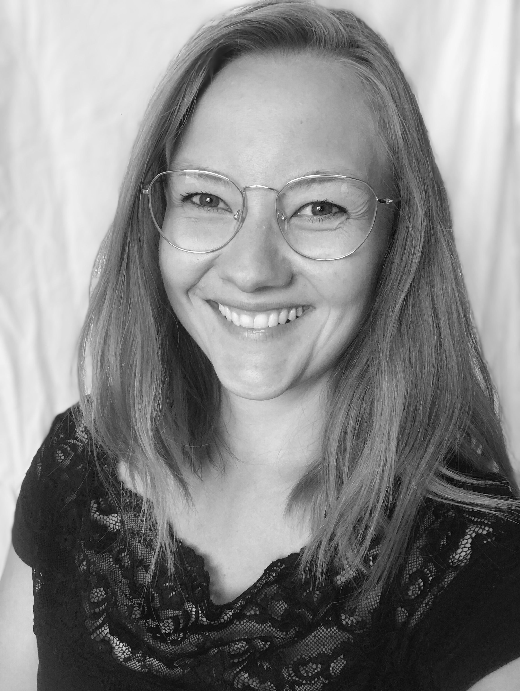

.png)
Rebecka who?
I want to create important applications!
Originally working as a radiographer, a poor danish healthcare system
planted a seed in my mind: If I changed direction in life, could I be
able to develop something better? A few years later and I am now
studying to become a data technician specialising in programming, a
type of education where school is less and learning by doing as a real
software developer is definitely more. I started my new career at
Odense Kommune in Denmark in 2019 where I maintain and develop web
applications for our employees.
Learning full-stack development I discovered that I have a (huge) soft spot in my heart for frontend, and my dream is to be able to create good-looking and user friendly applications that'll make a difference for the individual.
Learning full-stack development I discovered that I have a (huge) soft spot in my heart for frontend, and my dream is to be able to create good-looking and user friendly applications that'll make a difference for the individual.